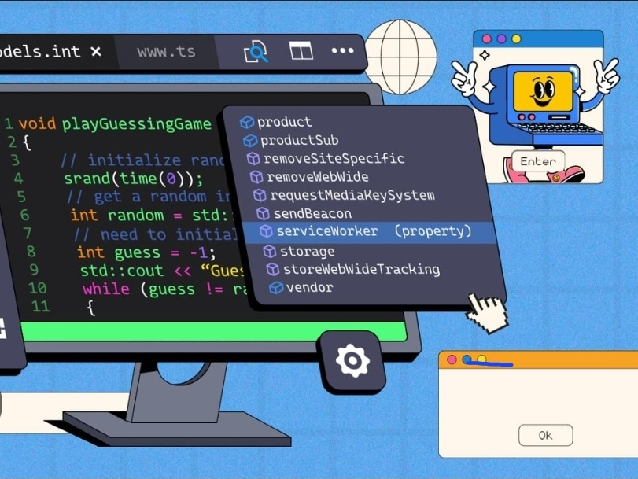
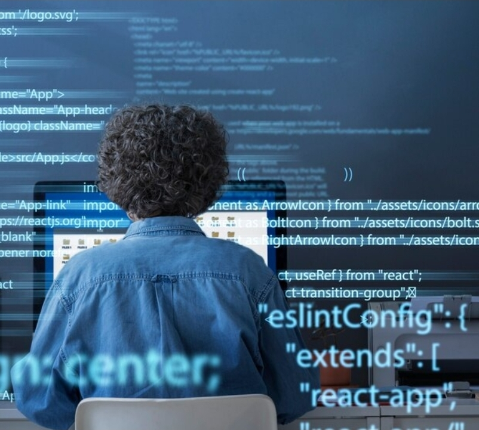

A programação é a ferramenta central da informática aplicada, sendo o processo de criar softwares que resolvem problemas práticos em diversas áreas. A programação fornece a lógica e as instruções que tornam os sistemas tecnológicos funcionais, enquanto a informática aplicada utiliza essas soluções de programação para atender necessidades específicas de um domínio, como saúde ou gestão empresarial.
Programação é o processo de criar um conjunto de instruções, chamadas de código, que dizem a um computador como realizar uma tarefa específica. A programação é fundamental para o desenvolvimento de softwares, aplicativos, sites e sistemas que usamos no dia a dia. Ela permite que criemos soluções para diversos problemas, automatizando tarefas e ampliando as possibilidades tecnológicas em áreas como saúde, educação, indústria e comunicação.
A programação é crucial no mundo atual, pois permite a criação de softwares, aplicativos, sites, jogos e sistemas de inteligência artificial. Ela impulsiona a inovação, automatiza tarefas, resolve problemas complexos e oferece soluções personalizadas para diversas áreas. Além disso, a programação desenvolve o raciocínio lógico, a capacidade de resolução de problemas e a criatividade, habilidades valiosas tanto na vida profissional quanto na pessoal.
Agora que você já entendeu o conceito e a importância da programação no mundo atual, conheça os principais pilares da programação:
São elas que permitem que os desenvolvedores criem no mundo digital os projetos do mundo real. Elas atuam como ferramentas de comunicação entre os desenvolvedores, permitindo a criação de programas, aplicativos e softwares complexos. Entre as linguagens mais conhecidas estão: Python e JavaScript.
Funciona como um conjunto de instruções que os programadores escrevem para dizer aos computadores o que fazer. Essas instruções orientam o computador a executar certas tarefas. O código-fonte é o ponto de partida para criar algo que funcione no mundo digital.
São conjuntos de instruções inteligentes que permitem aos desenvolvedores criar desde aplicativos simples até softwares complexos. Os algoritmos são essenciais para criar softwares e ajudam a encontrar soluções para diferentes desafios.
São compartimentos que guardam um tipo específico de informação e ajudam os programadores a organizar e encontrar dados de forma eficiente. Entendeu o que é informática, informática aplicada e programação, e o quanto elas já são e serão cada vez mais fundamentais ao avanço das tecnologias hoje e no futuro.
Feito com ❤ no Code like a girl